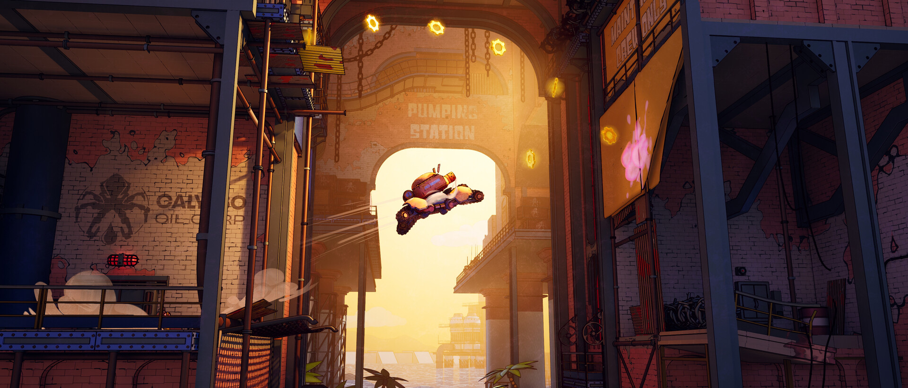
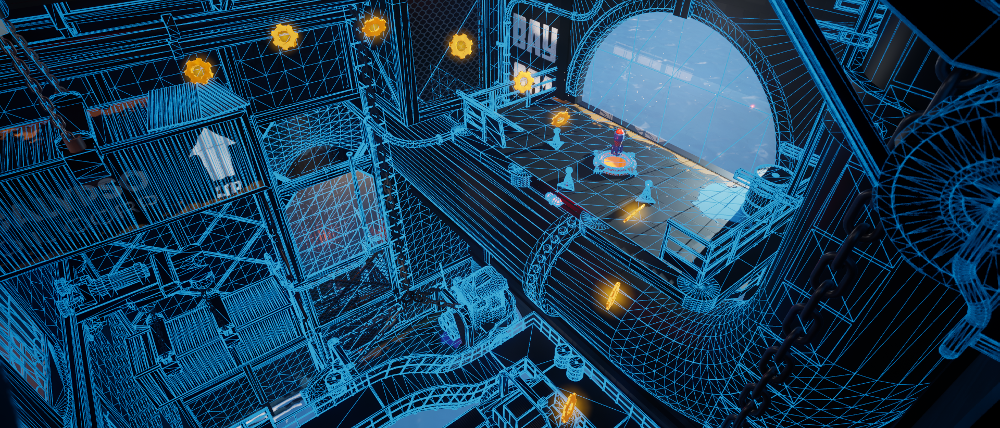
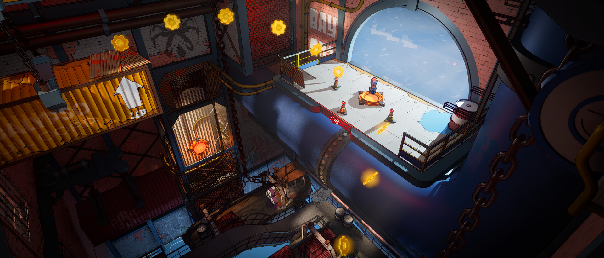
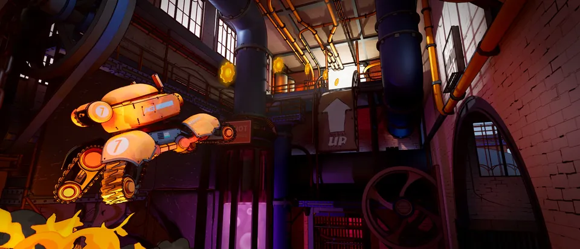
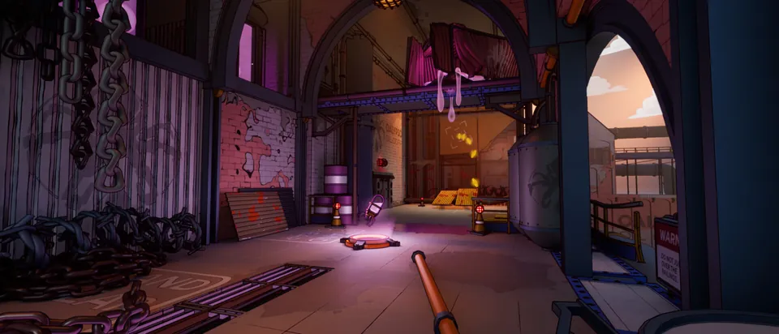
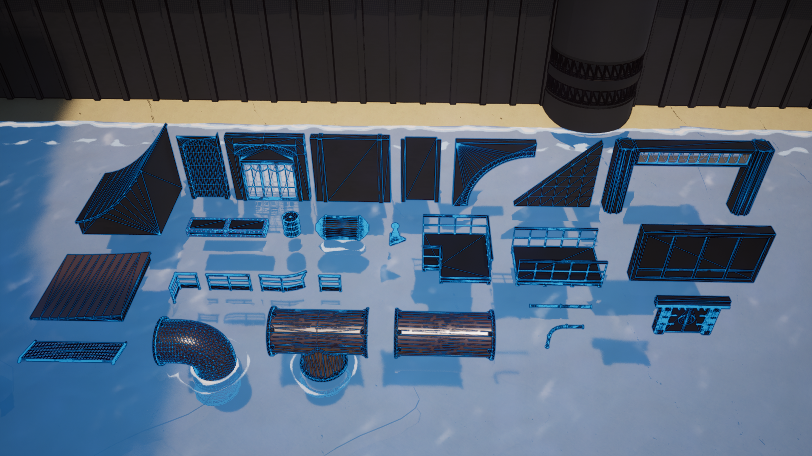
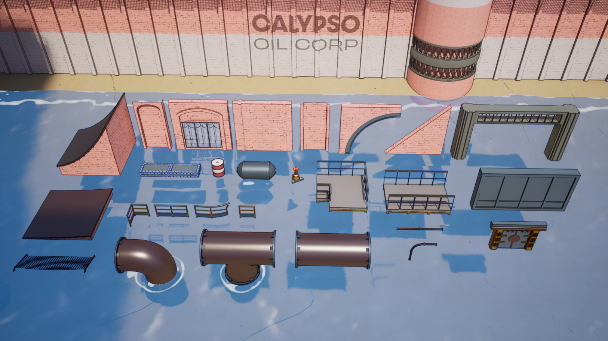
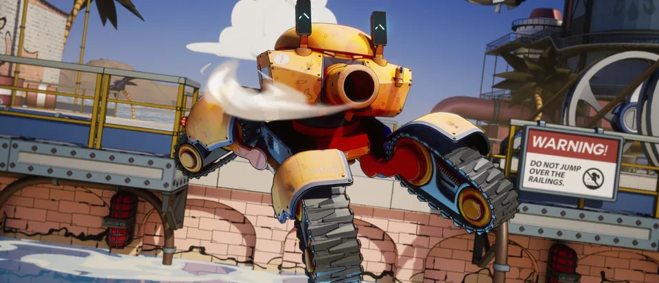

Turbo Tank
An internal game project at Digital Salmon, and a great opportunity for the team to try developing our own game. Stylised art wasn't normally in our wheelhouse, so it was a fun challenge to explore.
I was responsible for the environments, level design and a kit of structural pieces and props to build out new levels and challenges fast. Houdini proved to be a great tool for this. The project also taught me a lot about optimisation, as we aimed for a stable, high framerate.
- Role
- Environments, level design and kit building
- Context
- Digital Salmon
- Tools
- Unreal Engine, Maya, Houdini, Substance 3D Painter, Substance 3D Designer










